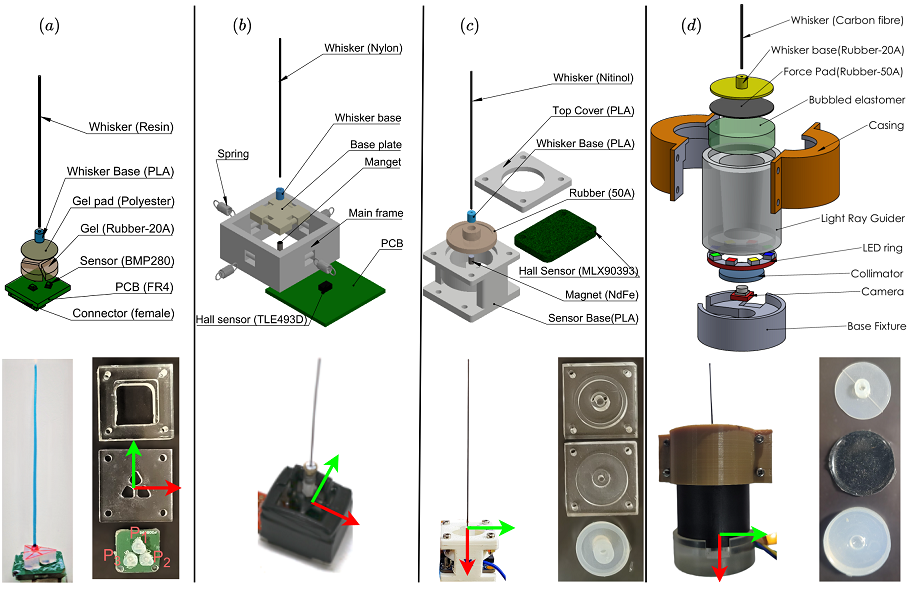
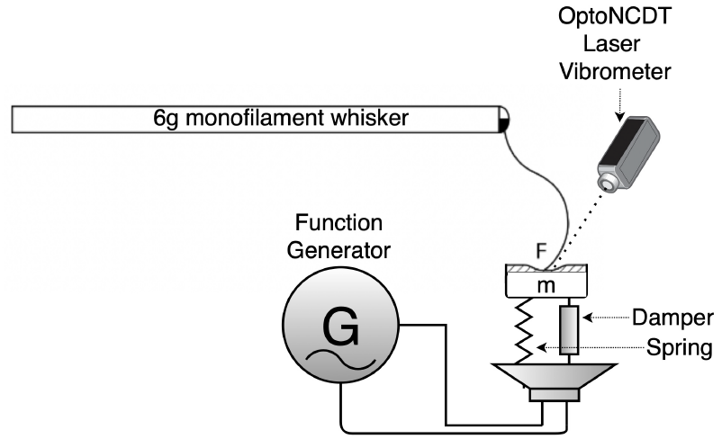
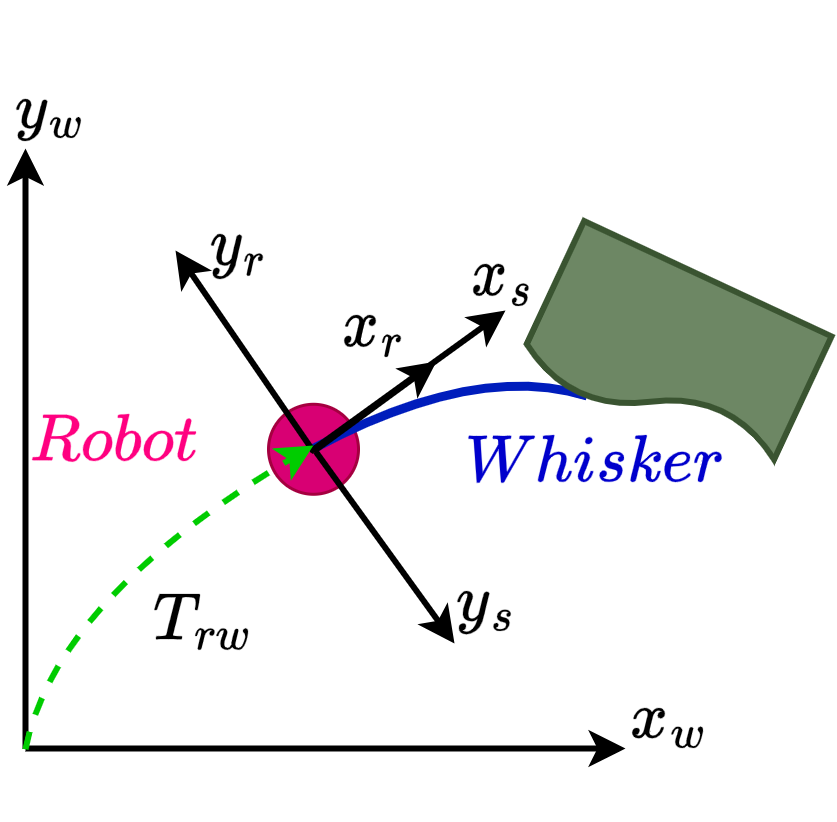

Design
This part of my research focuses on the physical design of sensing systems and experimental platforms. The aim is to build sensors and robotic systems that are simple, reproducible, robust, and suitable for real interaction with the environment.
Bio-Inspired Whisker Sensor Design

Image placeholder: insert a figure showing whisker-like sensor prototypes or fabricated whisker sensor modules.
This theme focuses on whisker-like tactile sensors inspired by biological vibrissae. These sensors are designed to detect contact, surface interaction, vibration, texture, and environmental constraints through the deformation of a slender whisker element.
The design problem includes the selection of the whisker material, compliant element, sensing element, support structure, and data acquisition system. The goal is to develop whisker sensors that are durable, easy to fabricate, reconfigurable, and suitable for experimental robotics.
Modular Sensing Architecture

Image placeholder: insert a schematic of the modular sensing architecture.
A central design idea is to treat a sensor as a modular system rather than a single fixed device. In this view, the sensing system can be separated into functional blocks: the physical interaction element, the compliant structure, the transduction mechanism, the mechanical support, and the data acquisition unit.
This modular view makes it easier to compare different sensor designs, replace individual components, and adapt the same core sensing idea to different tasks such as texture analysis, mobile robot navigation, and contact-based vibration measurement.
Sensor Transduction Mechanisms

Image placeholder: insert a figure comparing pressure, magnetic, optical, accelerometer, or camera-based sensing.
My sensor design work explores multiple transduction mechanisms. These include pressure sensing, Hall-effect magnetic sensing, accelerometer-based sensing, and vision-based tactile sensing. Each method provides a different way to convert physical interaction into measurable signals.
The design choice depends on the task. For example, rigid whiskers may be useful for fine texture discrimination, while flexible whiskers may be better suited for exploratory robots where robustness and repeated contact are important.
Soft and Vision-Based Haptic Sensors

Image placeholder: insert a figure of Subblescope or another soft vision-based haptic sensor.
This research direction focuses on soft tactile sensors that use deformation as a source of information. One example is a thin-film haptic sensor in which a camera observes deformation inside a soft elastomeric structure.
Such sensors are useful for measuring contact force, shear interaction, surface properties, and haptic interaction. The broader goal is to design tactile sensors that are compliant, low-cost, and suitable for robotic manipulation or human-machine interaction.
Contact-Based Vibrometer Design

Image placeholder: insert a figure of the whisker-based contact vibrometer setup.
This theme investigates whisker-inspired sensors for contact-based vibration measurement. The aim is to design a lightweight sensor that can touch a vibrating structure and measure its response without significantly altering the dynamics of the system under test.
The design combines a flexible whisker-like probe with a sensing mechanism that captures small deflections caused by vibration. This can support applications in vibration analysis, structural monitoring, robotic exploration, and contact-based diagnostics.
Robotic Experimental Platforms

Image placeholder: insert a figure of a robot platform, Kinect-based ball-catching setup, mobile robot, or manipulator.
Sensor design is connected to experimental robotic platforms. These platforms allow sensing concepts to be tested in complete perception-action loops, where the robot must observe, estimate, decide, and act.
Examples include mobile platforms for tactile navigation, manipulators for vision-guided interception, and experimental setups for texture exploration, vibrometry, and sensor characterization.
Design Keywords
- Bio-inspired sensing
- Whisker-like tactile sensors
- Modular sensor architecture
- Compliant mechanisms
- Pressure sensing
- Hall-effect sensing
- Vision-based tactile sensing
- Soft haptic sensors
- Contact-based vibrometer design
- Robotic experimental platforms